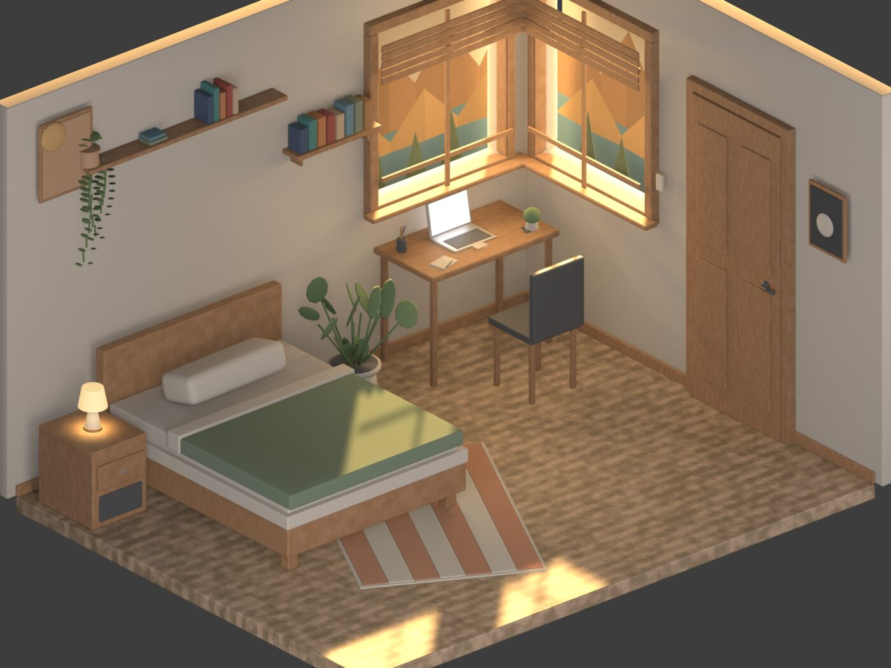
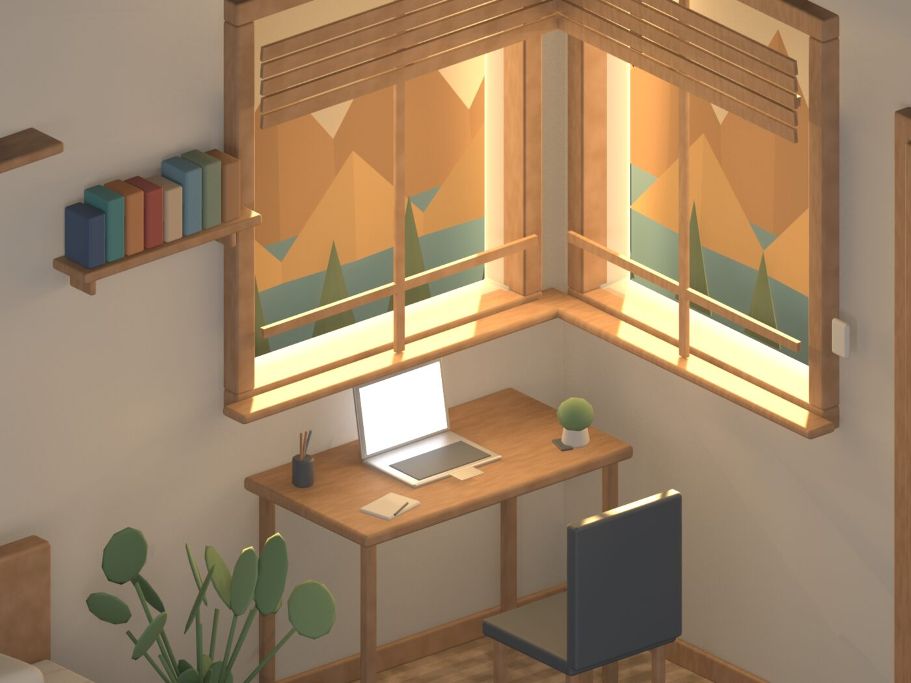
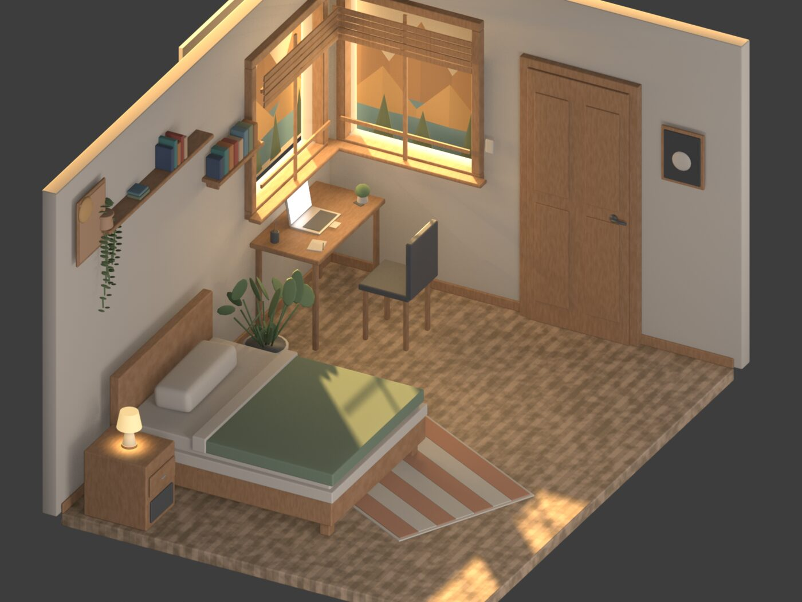

The window
The mountains were never outside.
A quiet corner room, warm as a memory. The window looks out on a range of peaks, except they're painted, flat, closer than any horizon. Nobody in the room seems to mind.



REEL